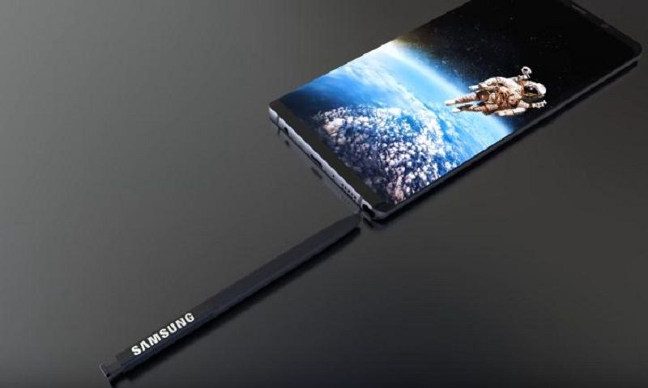

Desde hace ya varias semanas no han parado los rumores sobre el Samsung Galaxy Note 8 y sobre sus novedades. Quedan muy pocos meses para que por fin se presente este magnífico dispositivo.
Sin duda es uno de los terminales más esperados del año, y todas las miradas están puestas en él, ya que el año pasado su antecesor el Samsung Galaxy Note 7 tuvo más de un problema que seguro todos recordarán y esta vez Samsung quiere corregirlo.
Hoy toca hablar sobre el Samsung Galaxy Note 8 y su porcentaje de frontal, ya que este, podría ser mayor de lo que todos estamos esperando.
Por el momento solo ha habido una fotografía real sobre el supuesto terminal, la cual, no sabemos si finalmente concidirá con el dispositivo final. Todas las filtraciones restantes han sido acerca de imágenes digitales que se crean a partir de un modelo o escenario en 3D realizado en algún programa de computadora especializado, cuyo objetivo es dar una aparencia realista desde cualquier perspectiva del modelo (Render) y rumores de algunos analistas. Hoy, podemos ver un accesorio del Galaxy Note 8 que nos hace pensar en el porcentaje que ocupará su pantalla infinita.
Aunque la pantalla del Galaxy S8 nos gusta y es bastante atractiva, la que montará el nuevo dispositivo de Samsung se espera que cuente con una curva menos angulosa, además de ser más grande, lo cual llama mucho la atención. Hoy, gracias a un protector de pantalla que se ha filtrado, podemos conocer el supuesto diseño de esta pantalla, donde los biseles laterales son inexistentes, y el inferior y superior prácticamente nulos.
Esta claro que se trata de un protector de pantalla, y no de la pantalla real, pero nos deja hacernos una idea de lo que nos espera en el próximo terminal de Samsung. Este dispositivo contaría con una pantalla mucho más ajustada y más grande que la del S8, en parte, por la eliminación de una curva tan pronunciada en los laterales.

Todavía queda mucho camino por delante, y decenas de filtraciones, pero esta es una de las que más interés ha causado por el dispositivo, que podría llegar con uno de los diseños más espectaculares del momento para competir con el Google Pixel y el iPhone 8 de Apple. Seguiremos proporcionando toda la información que nos llegue sobre este dispositivo, para el cual todavía quedan un par de meses de espera.